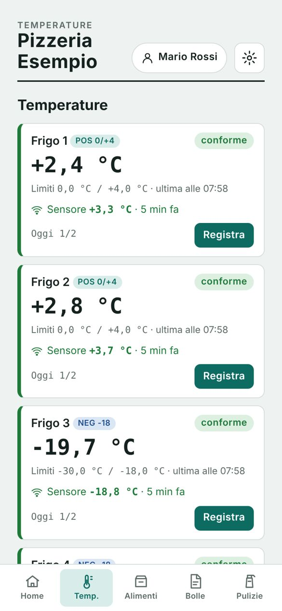
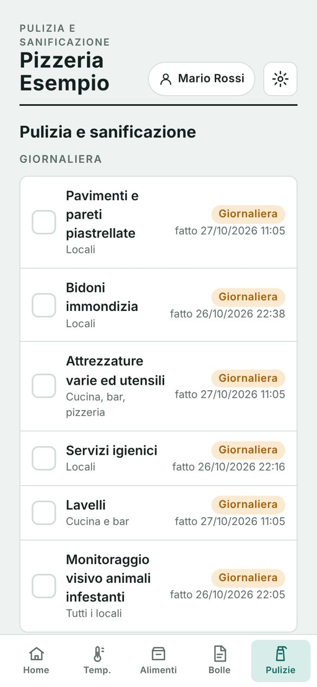
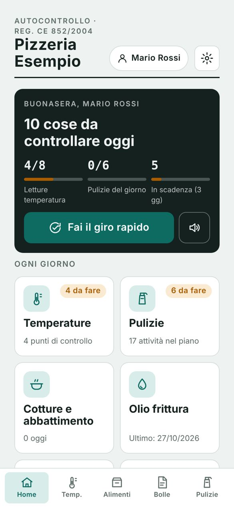
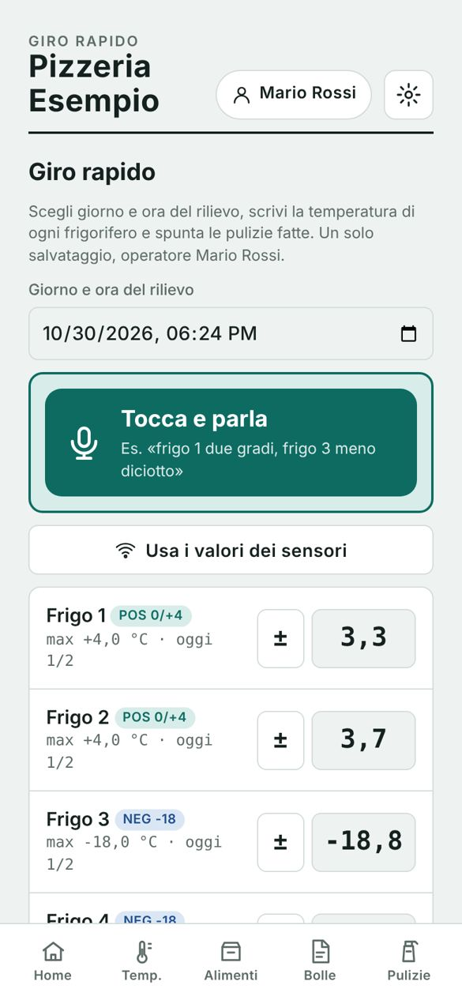

Basta schede di carta. Il tuo HACCP sta nel telefono.
Temperature, alimenti, pulizie, fornitori e documenti in un'app sola. Con i sensori WiFi i frigoriferi registrano la temperatura da soli e ti avvisano se qualcosa non va, anche di notte.
- iPhone e Android
- Impostata sul tuo manuale
- PDF pronti per il controllo



Ancora con la penna e il foglio appeso al frigo?
Con la carta
- Temperature scritte a fine settimana, tutte uguali
- Il congelatore si ferma di notte e lo scopri la mattina
- Bolle, lotti e scadenze sparsi tra cassetti e raccoglitori
- Al controllo si cercano i fogli del mese giusto
Con FreddaMente
- Ogni lettura con data, ora e operatore, e l'azione correttiva se è fuori limite
- Allarme sul telefono dopo 20 minuti fuori temperatura
- Lotti e scadenze collegati alla bolla del fornitore, con avviso prima che scadano
- Un tasto e i PDF sono pronti: registri, non conformità, fornitori, attestati

Le temperature della mattina in trenta secondi.
Apri il giro rapido, parli, e l'app compila. Spunti le pulizie fatte e salvi tutto insieme.
- Frigoriferi già codificati: positivi 0/+4 °C, negativi −18 °C
- Valore fuori limite: l'app chiede l'azione correttiva e apre la non conformità
- Con i sensori, un tasto inserisce i valori misurati
Il piano di pulizia del manuale, da spuntare.
Attività giornaliere, settimanali e mensili già impostate. Ogni spunta resta registrata con chi l'ha fatta e quando.
- In evidenza solo quello che c'è da fare oggi
- Disinfestazione, manutenzioni e scadenze dei documenti del locale
- Firma digitale dei registri a fine mese
Tutte le schede dell'autocontrollo, in un posto solo.
Alimenti e tracciabilità
Ricevimento merci, lotti, apertura e scadenze con avviso. Etichette da stampare con un tasto.
Fornitori, bolle e fatture
Fotografi la bolla e i prodotti entrano negli alimenti, collegati al fornitore e al lotto.
Cotture e abbattimento
Temperatura al cuore, abbattimento a +3 °C entro 2 ore, controllo dell'olio di frittura.
Non conformità
Ogni problema con la sua azione correttiva e la chiusura, pronto da mostrare.
Allergeni e ricettario
Tabella allergeni dei piatti per i clienti, ricette con i giorni di conservazione.
Personale e formazione
Attestati con scadenza, addestramento interno, operatori che firmano le registrazioni.
Una sonda in ogni frigo. Il registro si compila da solo.
Una sonda in acciaio dentro il frigo e una piccola scheda fuori, collegata alla corrente e al WiFi del locale. Niente fili da saldare: la installiamo noi o ti guidiamo passo passo.
Misura ogni 5 minuti
La temperatura arriva nell'app, sulla scheda di ogni frigo, giorno e notte.
Due letture al giorno nel registro
A inizio e fine servizio, se nessuno l'ha già scritta a mano, la lettura del sensore entra nel registro da sola.
Allarme sul telefono
Fuori limite per 20 minuti, o sonda staccata: ti arriva un messaggio su Telegram. E un altro quando torna normale.
Anche se il WiFi cade
La scheda tiene in memoria fino a 8 ore di misure e le invia appena torna la rete.
Esempio di letture e messaggi come arrivano sul telefono.
In una mattina sei operativo.
Scrivimi su WhatsApp
Mi dici che locale hai e quanti frigoriferi. Ti preparo l'app da provare gratis.
La impostiamo sul tuo locale
Frigoriferi, piano di pulizia, fornitori e operatori, partendo dal tuo manuale di autocontrollo.
Aggiungi i sensori quando vuoi
Un frigo alla volta. Dal giorno dopo le temperature entrano nel registro da sole.
Le domande che fanno tutti.
Funziona su iPhone e su Android?
Sì. Si apre dal telefono e si aggiunge alla schermata Home come un'app normale. Entri con la password, oppure con Face ID o impronta.
Sostituisce il manuale di autocontrollo?
No. Il manuale e la formazione del personale restano obbligatori. FreddaMente serve a tenere ogni giorno le registrazioni che il manuale prevede, in ordine e pronte da mostrare.
Cosa mostro al controllo?
Le schede in PDF (temperature, pulizie, non conformità, fornitori, attestati) che apri dal telefono o stampi. Un tasto le prepara tutte insieme.
Dove restano i miei dati?
Sul tuo telefono. L'app ti ricorda di scaricare un backup una volta al mese, e l'accesso è protetto da password.
Quanto costano app e sensori?
Dipende da quanti frigoriferi hai e da cosa ti serve. La prova è gratuita, il preventivo lo facciamo insieme.
I sensori sono difficili da montare?
No. La sonda si avvita su un morsetto e la scheda si collega con tre cavetti a incastro. La configurazione si fa da una pagina web in due minuti, oppure la facciamo noi.
E se cambia il WiFi del locale?
La scheda apre una sua rete: dal telefono ti colleghi e scegli il WiFi nuovo, senza computer.
Scrivici e te la facciamo provare.
Rispondiamo noi, Andrea e Sandro. Lavoriamo con bar, ristoranti e pizzerie della zona e ti seguiamo anche dopo la prova.
FreddaMente aiuta a tenere le registrazioni previste dal manuale di autocontrollo. I sensori sono strumenti di monitoraggio e vanno verificati periodicamente con il termometro di riferimento.